Le CP est le cours préparatoire destiné aux enfants de 6 ans environ.
Le CE1 et le CE2 sont les cours elementaires première et deuxième année
destinés aux enfants de 7-8 ans environ.
On utilise ici les commandes avance, tourne_droite et
tourne_gauche.
L’enfant utilise les boutons de la barre des boutons :
av ou td ou tg qui écrivent avance ou
tourne_droite ou tourne_gauche dans la ligne de commande.
Dans les dessins de cette section, il s’agit de reconnaitre la gauche de la
droite de la tortue. Pour les enfants qui sont en dificulté on peut tracer
sur un morceau de papier calque une flèche, où l’on marque D sur le
coté droit et G sur le coté gauche, par exemple :
On explique que la flèche c’est la tête de la tortue et que le point c’est là où elle se trouve, et quand elle tourne, elle reste à la même place et seule sa tête change de direction.
Sur un papier quadrillé ou sur du papier pointé, l’enfant dessine l’escalier de 4 marches ci-dessous :
Puis il doit reproduire ce dessin sur l’écran de l’ordinateur.
L’enfant utilise les boutons av ou td ou tg, puis appuie
sur entree : il ne prévoit pas à l’avance les commandes mais il
travaille au pas à pas.
Dans un deuxième temps on pourra exécuter plusieurs commandes en
les séparant par ; par exemple :
avance;tourne_droite; avance;tourne_gauche;
Une fois l’escalier terminé on peut lui demander de faire revenir la tortue
à son point de départ en passant sur les traits : ce dessin se fera en
utilisant une autre couleur.
L’enfant utilise les boutons cr puis av ou td ou tg,
puis appuie sur entree.
cr est l’abreviation de la commande crayon qui permet de changer
la couleur du crayon par exemple : crayon rouge ou crayon gomme.
L’enfant peut utiliser les boutons av, re, td et tg,
abreviations des commandes
avance, recule, tourne_gauche, tourne_droite.
Ici, on remarquera que le symetrique s’obtient avec la même suite de
commandes que celle utilisée pour faire le premier escalier.
Sur un papier pointé, l’enfant dessine la tour et le chateau fort suivants :
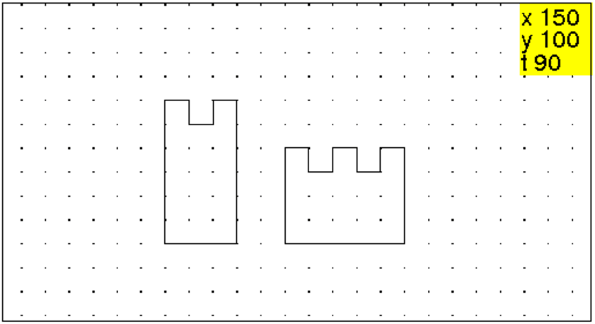
Puis il doit reproduire ce dessin sur l’écran de l’ordinateur.
Durant cette séance, il faut faire comprendre que les commandes pour réaliser la deuxième tour seront les mêmes que celles de la première tour à condition de mettre la tortue au bon endroit au demarrage du tracé de la deuxième tour.
On explique que l’on peut donner un nom à une suite de commandes en utilisant les commandes debut_enregistrement et fin_enregistrement
La procédure M va réaliser le dessin ci-dessous sur lequel on a noté à l’aide d’un triangle plein la position de départ de la tortue et par un triangle la position d’arrivée de la tortue.
On tape par exemple :
debut_enregistrement "M" puis,
avance entrée
tourne_droite entrée
avance entrée
tourne_gauche entrée puis,
fin_enregistrement "M.cxx"
On vient ainsi de créer deux choses :
la commande M() qui dessine une marche et le fichier M.cxx qui
contient cette commande : on pourra ainsi retrouver la commande M lors des séances suivantes en tapant :
ramene "M.cxx".
Attention
- les noms des fichiers sont entourés de " mais pas
le nom de la commande.
- pour exécuter la commande il est obligatoire de faire suivre le nom par des
parenthèses comme : M().
- une commande réalise un dessin dépendant de la position de la tortue
avant son exécution (position de départ) et qui laisse la tortue en
général à un autre endroit (position finale).
Il faut comprendre que les deux dessins ci-dessous sont le résultat de
l’exécution de la même procédure M() car les dessins sont
superposables et se font selon la position de la tortue au départ.
Exemple : l’escalier symétrique
On tape :
M();M();M();M(); entrée puis,
tourne_droite; entrée
M();M();M();M(); entrée
Avec des élèves plus agés on peut écrire directement :
M():={avance;tourne_droite;avance;tourne_gauche;},
puis pour avoir le dessin de l’escalier :
tourne_gauche;repete(4,M())
On peut aussi écrire la procédure escalier ayant comme paramètre
n, le nombre de marches :
escalier(n):=repete(n,M()).
On a alors :
escalier2(n):={escalier(n); tourne_droite;escalier(n)}
puis pour avoir le dessin de l’escalier symétrique ayant 7 marches:
tourne_gauche; escalier2(7)
La procédure T va réaliser le dessin ci-dessous sur lequel on a noté à l’aide d’un triangle plein la position de départ de la tortue et par un triangle la position d’arrivée de la tortue : ici on ne voit qu’un triangle plein car la position d’arrivée de la tortue est la même que sa position de départ.
Remarque
Il faut bien voir que l’écriture de la procédure T dépend du choix
de la position de départ et d’arrivée de la tortue et que pour un même
dessin il y a plusieurs choix possibles.
On tape :
debut_enregistrement "T" puis,
avance(60) entrée
tourne_droite entrée
avance entrée
tourne_droite entrée
avance entrée
tourne_gauche entrée
avance entrée
tourne_gauche entrée
avance entrée
tourne_droite entrée
avance entrée
tourne_droite entrée
avance(60) entrée
tourne_droite entrée
avance(30) entrée
tourne_droite entrée
fin_enregistrement "M.cxx"
Puis on tape :
tourne_gauche entrée
T() entrée
Pour faire plusieurs tours, on tape :
tourne_gauche entrée
T() entrée
pas_de_cote -30 entrée
T() entrée
pas_de_cote -30 entrée
T() entrée etc...
Ce train est composé d’une locomotive L, de wagons de voyageurs
V et de wagons de marchandises W.
Pour faire L,V et W on a besoin de savoir faire un carré
C.
Les procédures C, L, V et W vont réaliser le dessin
ci-dessous sur lequel on a
noté à l’aide d’un triangle plein la position de départ de la tortue et
à l’aide d’un triangle sa position d’arrivée.
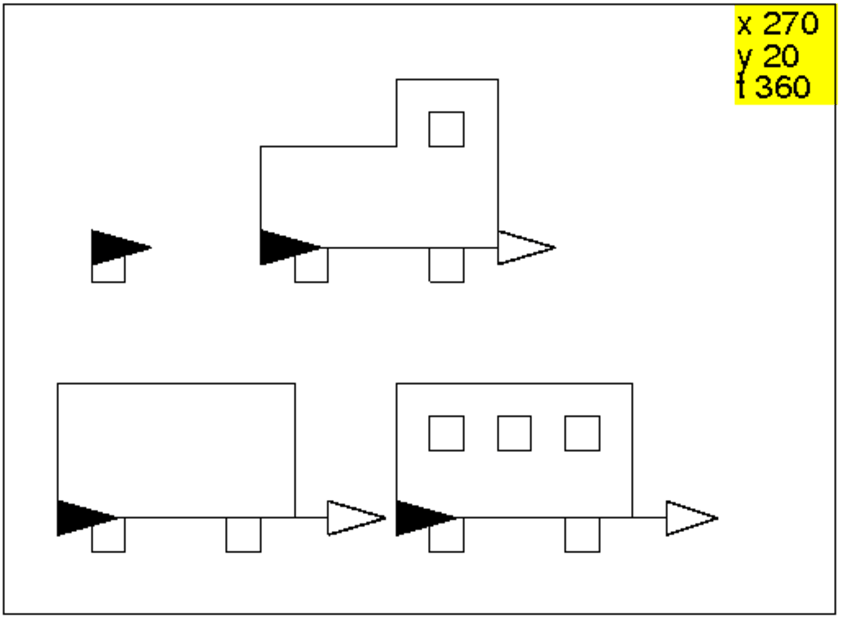
On tape :
C():={
repete(4,avance,tourne_droite);
}:;
W():={
avance ;C();
avance 40;C();
avance 20;
tourne_gauche ;
avance 40;
tourne_gauche ;
avance 70;
tourne_gauche ;
avance 40;
tourne_gauche ;
avance 80;
}:;
V():={
W();
recule 70;
pas_de_cote 30;
repete(3,C(),saute 20);
pas_de_cote -30;
avance;
}:;
L():={
avance 10;C();
avance 40;C();
avance 20;
tourne_gauche ;
avance 50;
tourne_gauche ;
avance 30;
tourne_droite ;
recule 20;
pas_de_cote -10;
C();pas_de_cote ;
tourne_gauche ;
avance 40;
tourne_gauche ;
avance 30;
tourne_gauche ;
avance 70;
}
:;
Un train peut alors se former en tapant :
W();V();L()
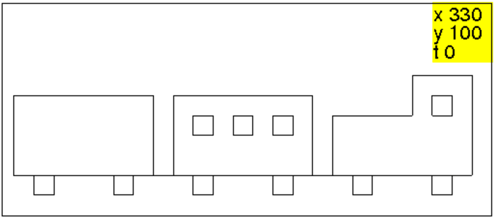
Nous allons apprendre dans cette séance à se servir des commandes :
rectangle_plein, triangle_plein, disque et utiliser aussi les commandes
repete pour répéter et crayon pour changer la couleur.
Nous allons mettre côte à cote plusieurs fois le même motif.
Nous choisissons des motifs simples comme par exemple :
un carré, un saut etc...
un carré rouge, un carré noir etc...
un triangle isocèle rectangle plein, un saut etc...
un triangle isocèle rectangle plein rouge, un isocèle rectangle plein noir etc...
un disque, un saut etc...
un disque rouge, un disque noir etc...
un quart de disque, un saut etc...
un quart de disque rouge, un quart de disque noir etc...
On pourra écrire dans la ligne des commandes :
rectangle_plein 20;saute 40
que l’on peut valider plusieurs fois (il faut savoir aussi que Ctrl+
la flèche vers le haut du clavier met dans la ligne des commandes, les
commandes précédentes et que esc efface la ligne des commandes).
On explique que :
rectangle_plein 20;saute 40;rectangle_plein 20;saute 40;
produit la même chose que :
repete(2,rectangle_plein 20,saute 40)
Il faut bien faire attention à la syntaxe :
; sépare deux instructions et
, sépare les paramètres d’une instruction.
On tape par exemple :
des_tor():={
cache_tortue;
tourne_gauche;
avance 5;
tourne_droite(180-180/pi*atan(3.4));
avance(sqrt(25+17^2));
tourne_droite(180-2*180/pi*atan(1/3.4));
avance(sqrt(25+17^2));
tourne_droite(180-180/pi*atan(3.4));
avance 5;tourne_droite;
montre_tortue;
}:;
motif0():={
crayon vert;
rectangle_plein 20;
crayon jaune;
dessine_tortue;
saute(20);
crayon rouge;
tourne_droite ;
rectangle_plein 20;
tourne_gauche;
saute(20);
}:;
motif():={
crayon vert;
rectangle_plein 20;
saute(20);
crayon rouge;
tourne_droite ;
rectangle_plein 20;
tourne_gauche;
saute(20);
}:;
Puis on tape :
pas_de_cote -60; saute -40; repete(5,motif()); cache_tortue;
On obtient :
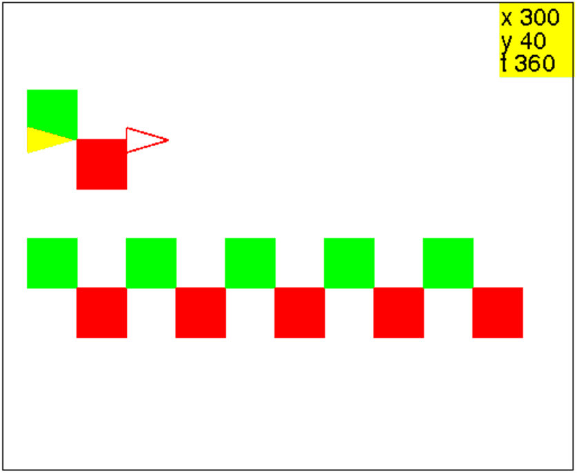
Ici on utilise la commande rectangle_plein qui dessine un carré ou
un rectangle plein :
rectangle_plein dessine un carré plein de côtés 10 dans le sens
trigonométrique.
rectangle_plein 20 ou rectangle_plein(20) dessine un carré
plein de côtés 20 dans le sens trigonométrique.
rectangle_plein(20,50) dessine un rectangle plein de
côtés 20 et 50 dans le sens trigonométrique.
Attention
Les parenthèses sont onligatoires pour les primitives ayant plus d’un
paramètre.
Voici la ribambelle de bonhommes que l’on veut dessiner :
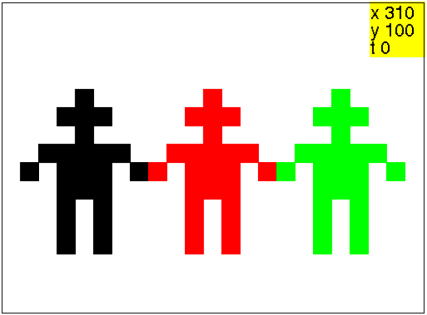
On va écrire une procédure bonhomme. Il faut bien comprendre que les
choix du départ et d’arrivée de la tortue ne sont pas uniques et dependent
de ce que l’on veut faire par
exemple, pour faire une ribambelle il
peut être judicieux de démarrer le bonhomme au
bout du bras gauche et de terminer au bout du bras droit pour être prêt
à un nouveau départ. Pour cela,
on décompose ce bonhomme en :
- une tête formée par une croix composée de 5 carrés de côtés 10
pas.
- deux bras formés chacun par 2 carrés,
- un corps formé par un carré de côtés 30 pas.
- deux jambes formées chacune par un rectangle de côtés 10 et 30 pas
On définit alors les procédures tete et bras correspondant aux
dessins où la position de départ de la tortue est une forme pleine et
sa position d’arrivée une forme vide.
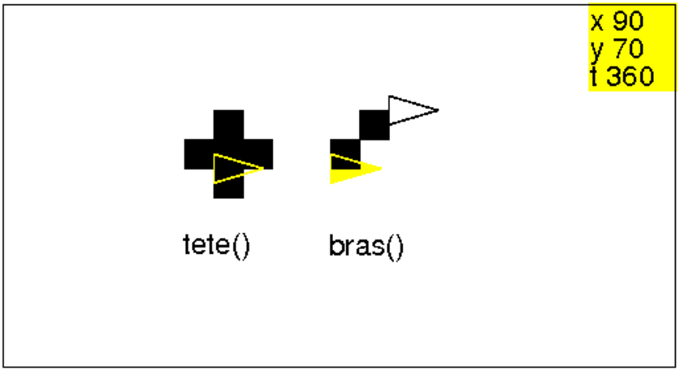
On tape
tete():={
rectangle_plein;
repete(4,saute,rectangle_plein,tourne_gauche);
}:;
On définit la procédure bras en tapant :
bras():={
rectangle_plein ;
saute ;
pas_de_cote ;
rectangle_plein ;
saute ;
pas_de_cote ;
}:;
Puis on tape :
bonhomme():={
bras();
tourne_droite ;
rectangle_plein 30;
tourne_gauche ;
saute ;
pas_de_cote ;
tete();
pas_de_cote -40;
tourne_gauche 180;
rectangle_plein(10,30);
recule 20;
rectangle_plein(10,30);
pas_de_cote -30;
tourne_gauche ;
bras();
tourne_gauche ;
}:;
Ensuite on peut faire des variantes en réalisant des bonhommes avec les deux
bras levés ou avec un bras levé et l’autre baissé...puis faire une
ribambelle.
On tape par exemple bonhomme1 qui a le bras gauche baissé et le bras
droit levé et bonhomme2 qui a le bras gauche levé et le bras
droit baissé :
On tape :
bonhomme1():={
bras();
tourne_droite ;
rectangle_plein 30;
tourne_gauche ;
saute ;
pas_de_cote ;
tete();
pas_de_cote -40;
tourne_gauche 180;
rectangle_plein(10,30);
recule 20;
rectangle_plein(10,30);
pas_de_cote -20;
tourne_gauche 180;
bras();
tourne_droite ;
}:;
bonhomme2():={
bras();
recule ;
rectangle_plein 30;
tourne_gauche ;
saute ;
pas_de_cote ;
tete();
pas_de_cote -40;
tourne_gauche 180;
rectangle_plein(10,30);
recule 20;
rectangle_plein(10,30);
pas_de_cote -30;
tourne_gauche ;
bras();
tourne_gauche ;
}:;
On tape :
efface ; bonhomme1(); crayon rouge; bonhomme2(); crayon vert; bonhomme1(); cache_tortue;
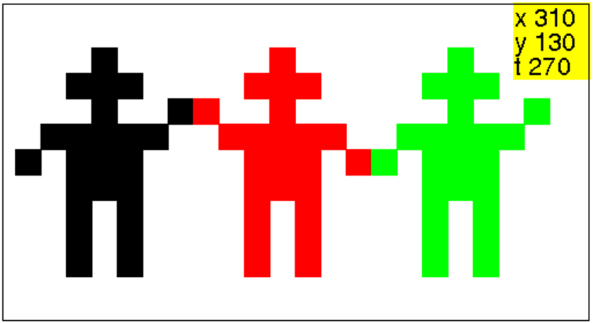
Ici on utilise les commandes rectangle_plein ou triangle_plein
qui dessine un rectangle plein ou un triangle plein,
à gauche de la position de départ de la tortue, la tortue étant
dirigée au départ selon un côté.
Voici les dessins du toit, de la maison et du bateau sur lesquels on a noté
à l’aide d’un triangle plein la position de départ de la tortue et
par un triangle la position d’arrivée de la tortue, lorsqu’on ne voit qu’un
triangle plein c’est que la position d’arrivée de la tortue est la même
que sa position de départ.
On remarquera que le bateau et la maison se font avec la même procédure.
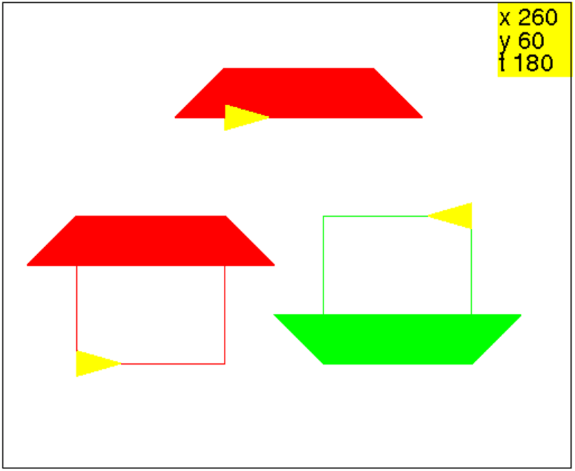
toit():={
rectangle_plein(60,20);
tourne_gauche;
triangle_plein(20,20);
pas_de_cote -60;
tourne_droite;
triangle_plein(20,20);
}:;
maison():={
tourne_gauche;
avance 40;
tourne_droite;
toit();
tourne_droite;
avance 40;
tourne_droite;
avance 60;
tourne_droite 180;
}:;
On tape :
maison()
Ou on tape :
tourne_droite 180;bateau()
Voici les dessins des bateaux que l’on veut réaliser :
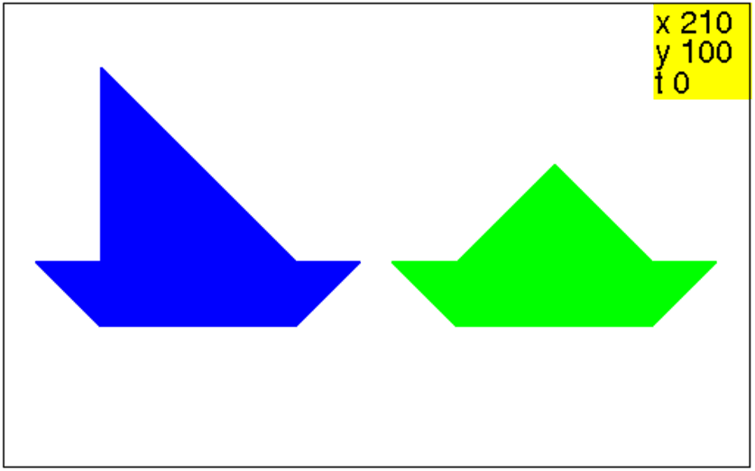
Il s’agit de réutiliser la procédure toit créer précédemment.
Pour cela on tape, par exemple les procédure bateau1 et bateau2
dans lesquelles la position d’arrivée de la tortue est aussi sa position de
départ :
bateau1():={
tourne_droite 180;
toit();
tourne_droite 180;
triangle_plein(60,60);
saute 60;
}:;
bateau2():={
tourne_droite 180;
toit();
tourne_droite 180;
avance 30;
triangle_plein(30,30);
tourne_gauche;
triangle_plein(30,30);
tourne_droite;
saute 30;
}:;
Puis on demande de faire une frise faite de 2 lignes composées chacune de
trois bateau2, on veut obtenir :
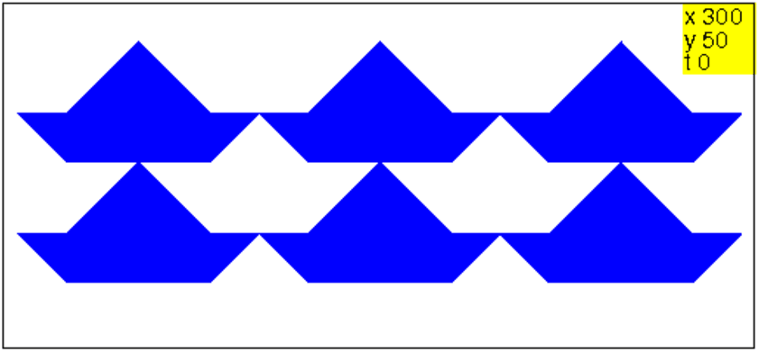
On remarque alors qu’il apparait un troisième bateau que l’on demande de
définir.
On tape par exemple :
bateau3():={
tourne_droite;
triangle_plein(30,30);
tourne_droite;
rectangle_plein(40,30);
saute 40;
triangle_plein(30,30);
tourne_droite 180;
saute 20;
triangle_plein(20,20);
tourne_gauche;
triangle_plein(20,20);
tourne_droite ;
saute 20;
}:;
Comment faire pour que le bateau qui apparait soit le même ?
Autrement trouver un pavage fait avec un seul bateau.
Pour avoir un pavage, il faut que les voiles aient la même
dimensions que les triangles formant les bords de la coque. Les voiles peuvent
alors être placées n’importe où sur la coque.
On peut donc définir une procédure paramétrée avec n
(0<n<60) qui sera la place des voiles sur la coque.
Par exemple, on tape si on veut encore utiliser toit :
navire(n):={
tourne_droite 180;
toit();
tourne_droite 180;
saute n;
triangle_plein(20,20);
tourne_gauche;
triangle_plein(20,20);
tourne_droite;
saute 60-n;
}:;
Voici par exemple navire(10) et navire(50) :
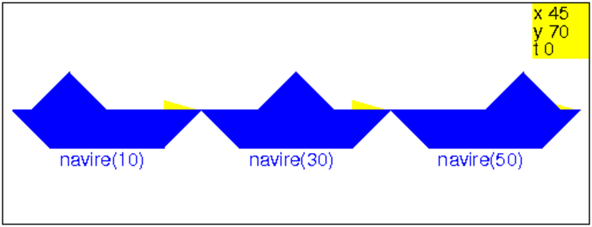
Voici par exemple un pavage réalisé avec navire(30) :
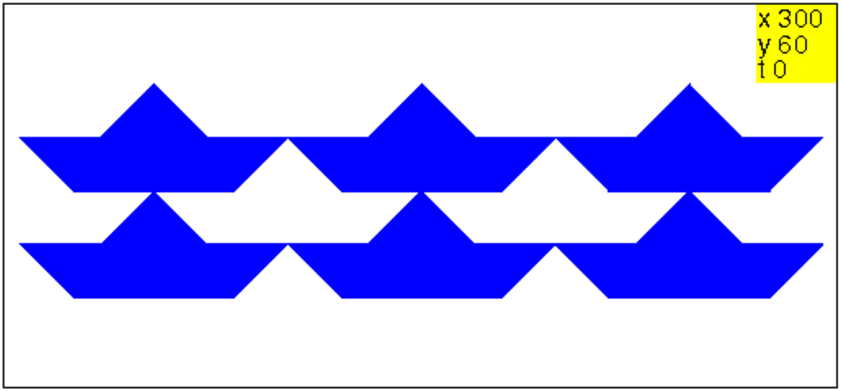
Voici par exemple un pavage réalisé avec navire(10) :
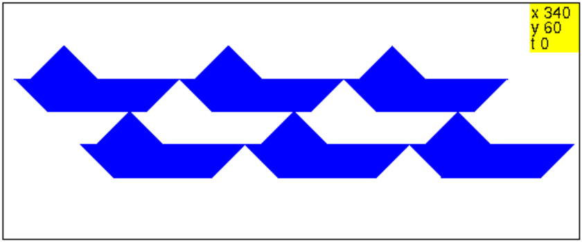
ou un pavage réalisé avec navire(10) et navire(50) :
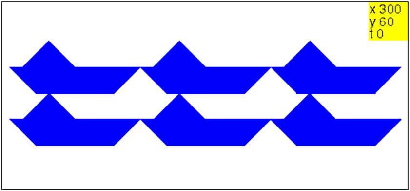
Et encore un pavage fait avec les navire(n) pour n=10,20...60,
pour cela on tape :
pavage():={
repete(2,navire(10),saute 100);
navire(10);
saute -240;
pas_de_cote -20;
crayon rouge;
repete(3,navire(20),saute 100);
navire(20);
saute -250;
pas_de_cote -20;
crayon vert;
repete(2,navire(30),saute 100);
navire(30);
saute -260;
pas_de_cote -20;
crayon bleu;
repete(3,navire(40),saute 100);
navire(40);
saute -270;
pas_de_cote -20;
crayon jaune;
repete(2,navire(50),saute 100);
navire(50);
saute -180;
pas_de_cote -20;
crayon magenta;
repete(2,navire(60),saute 100);
navire(60);
saute -230;
pas_de_cote -20;
crayon noir;
repete(3,navire(10),saute 100);
navire(10);
saute -340;
pas_de_cote -20;
crayon rouge;
repete(3,navire(20),saute 100);
navire(20);
saute -250;
pas_de_cote -20;
crayon vert;
repete(2,navire(30),saute 100);
navire(30);
saute -260;
pas_de_cote -20;
crayon bleu;
repete(3,navire(40),saute 100);
navire(40);
saute -270;
pas_de_cote -20;
crayon jaune;
repete(2,navire(50),saute 100);
navire(50);
}:;
Puis on tape :
efface; pavage(); cache_tortue;
On obtient :
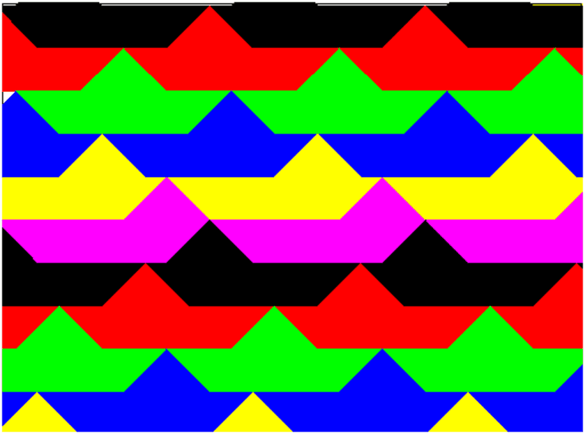
On peut faire une ligne composée de toit espacée par n pas, pour cela on tape :
toit():={
rectangle_plein(60,20);
tourne_gauche;
triangle_plein(20,20);
pas_de_cote -60;
tourne_droite;
triangle_plein(20,20);
};
toits(n):={
repete(3,toit(),saute 40+n);
}:;
En effet dans la procédure toit la tortue a avancé de 60 pas et comme
la longueur du toit est de 100 pas, il faut faire 40 pas, pour réaliser
un deuxième toit qui touche le premier.
En faisant plusieurs lignes de toits(0), en quinconce, et
n faisant plusieurs lignes de toits(60), on tape :
efface ; saute 60; crayon rouge; toits(0); pas_de_cote -20; saute -350; crayon vert; toit(); saute 40; toits(0); pas_de_cote -20; saute -350; crayon rouge; toits(0); saute -60; pas_de_cote -40; saute -350; crayon bleu; toits(60); pas_de_cote -20; saute -400; crayon jaune; toits(60); pas_de_cote -20; saute -560; crayon bleu; toits(60); cache_tortue;
On obtient :
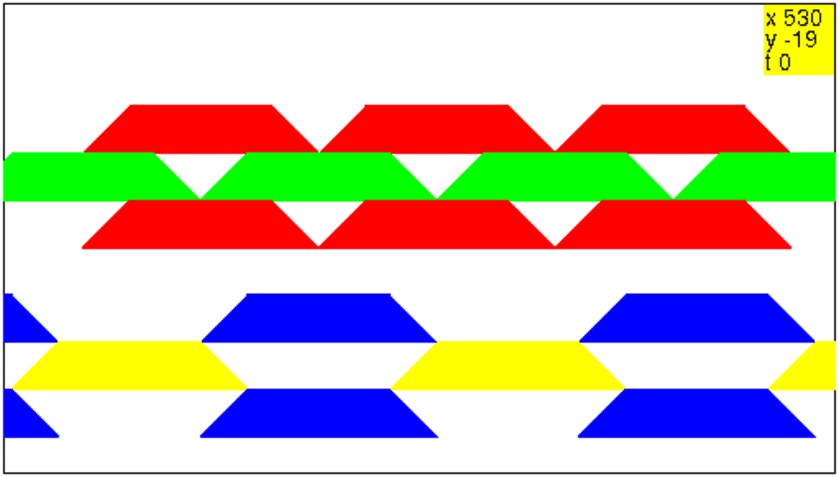
Ici on utilise les commandes disque ou rond qui dessine un disque
ou un cercle à partir d’une position de la tortue qui est tangentielle au
disque ou au cercle.
Voici le dessin du bonhomme de neige et de son balai que l’on fera dessiner
sur papier millimétré aux enfants :
le corps est un cercle qui a comme rayon 60, la tête est un cercle qui a
comme rayon 20, les boutons et les yeux sont des cercles de rayon 6 et
le chapeau un demi-disque de rayon 10.
On choisit comme modéle de balai le dessin ci-dessous sur lequel on a
mis un petit triangle plein pour désigner le choix de la position de départ
et d’arrivée de la tortue :
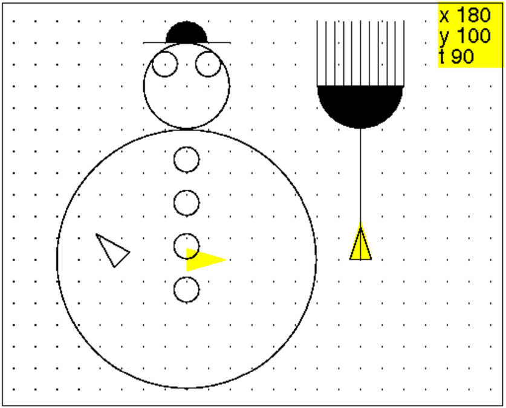
Si on choisit de prendre comme position de départ de la tortue, le centre du corps, avec le cap 0, et une arrivée décalée à gauche de 30 pas, par rapport à ce centre, et de cap 135 (pour être en position pour mettre le balai), On tape :
bonhomme():={
pas_de_cote 60;
rond 20;
rond -60;
pas_de_cote -20;
rond 6;
pas_de_cote -20;
rond 6;
pas_de_cote -20;
rond 6;
pas_de_cote -20;
rond 6;
pas_de_cote 110;
saute 16;
tourne_gauche;
rond 6;
pas_de_cote 20;
rond 6;
pas_de_cote -4;
saute;
tourne_gauche;
avance 20;
recule 40;
avance;
tourne_droite ;
disque(10,180);
saute 100;
pas_de_cote -20;
tourne_droite 135;
}:;
On tape :
balai():={
avance 80;
tourne_gauche;
avance 20;
tourne_gauche;
disque(20,180);
repete(5,avance 30,pas_de_cote 4,recule 30,pas_de_cote 4);
avance 30;
recule 30;
pas_de_cote -20;
recule 80;
} :;
Puis on tape :
bonhomme()
balai()
On obtient :
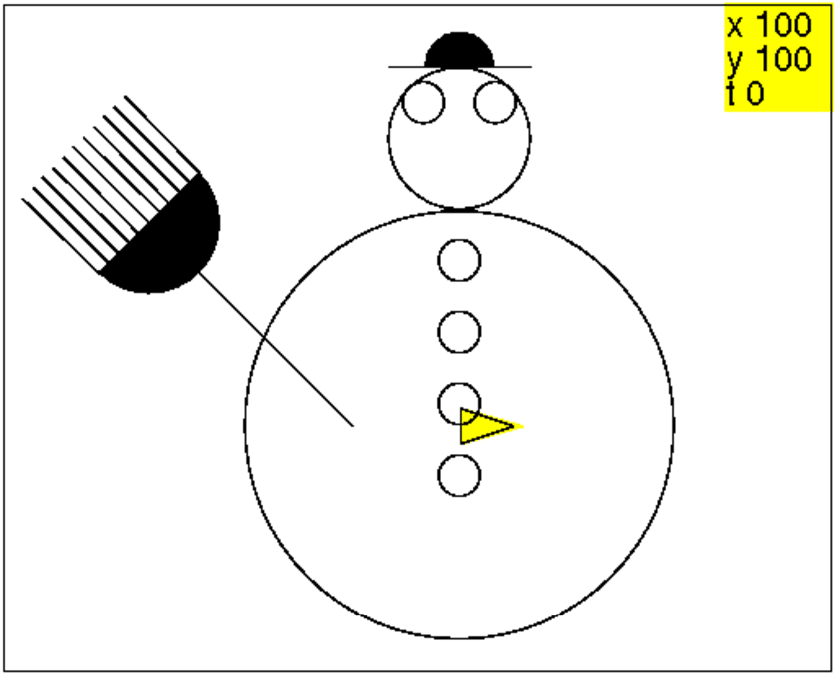